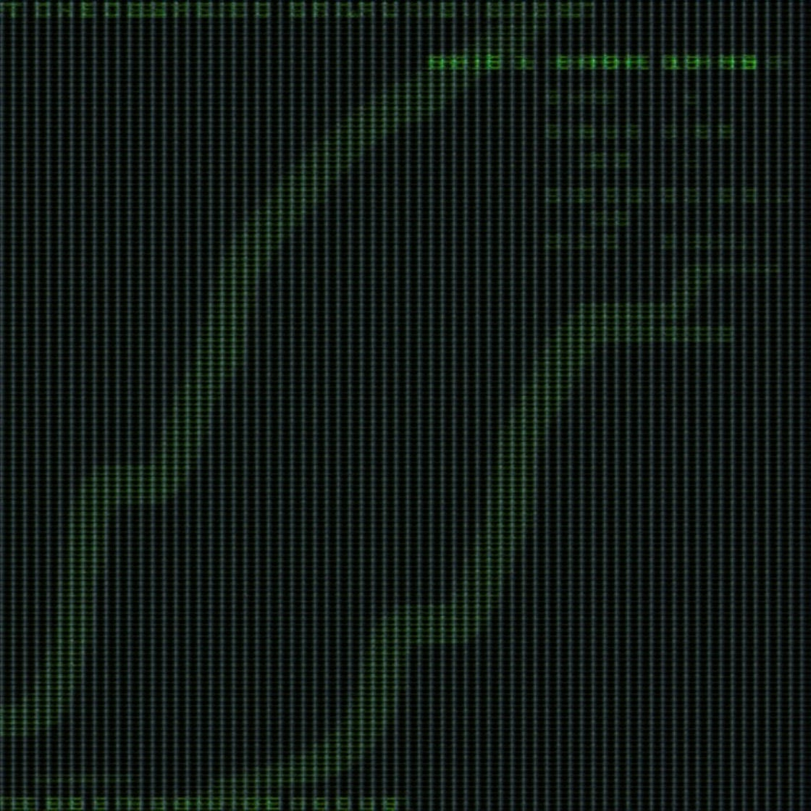

In Search of Signals

This isn't just a tech stack. This is about chasing signals, asking questions, and understanding the systems that shape our lives.
My path begins in Latin America—Brazil, to be precise. After high school, I went straight into an Information Science degree. I followed it for a year, but at the time, I was lost. So I started chasing the truth—and switched to psychology.
It wasn't just a career change. It was a shift in how I wanted to understand people, systems, and the world. A year and a half in, I hit pause. I had decided to move to France.
Since then, it's been a long battle for stability and purpose.
I've dabbled in client service, trained in first aid, and worked as a hospital lab technician. And once some kind of footing was found, I circled back to tech.
Tracewire is my way of making sense of what I find—and shedding light on the things most people scroll past.
Writing has changed everything for me. It slows things down. It makes me notice. And sometimes, writing is how I trace the truth.
Here, you'll find deep dives, breakdowns, case studies, and personal reflections. Sometimes tech-heavy. Sometimes story-driven. Always searching.
I don't have all the answers. But I'll keep tracing.
And if you're wired the same way, you'll probably want to follow along.